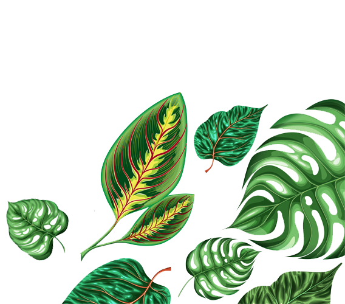
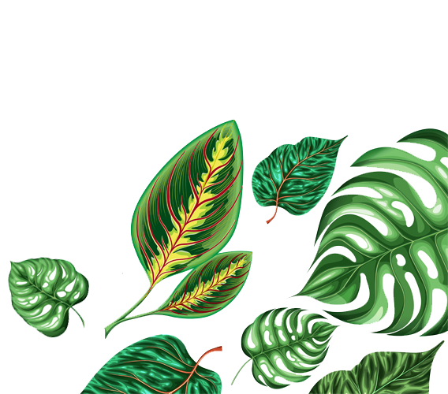

Senna siamea

- Partie utilisée :
Feuille - Mode de préparation :
Décoction - Mode d'administration :
Bain de vapeur
Description et écologie
C'est un arbre dont la cime irrégulière peut atteindre 25 m de haut.
Les feuilles sont composées.
Les fleurs jaunes sont groupées en grappes denses de 15-30 cm de long.
Le fruit est une gousse linéaire-oblongue de 15-30 cm de long.
Espèce de reboisement surtout planté comme arbre de protection des sols, car il n'est pas attaqué par le bétail. On l'observe dans les forêts de La Providence (Saint-Denis), dans les espaces verts du Port, dans la forêt d'Etang-Salé pour la fixation des dunes.
Il peut être utilisé comme bois de feu car il a l'avantage de rejeter de souche facilement et a une croissance assez rapide.
Le bois de coeur, dur, gris chiné de jaune, est recherché pour l'ébénisterie et la tournerie, l'aubier blanc ne présentant pas de qualités remarquables. Il est sensible aux attaques biologiques.
Cette espèce, qui résiste à la sécheresse et qui, au-delà de deux ans produit une biomasse importante, est utilisée comme engrais vert au Bénin.
profonds et bien drainés, de préférence proche d'une nappe phréatique. La température minimale est de 15 °C et la pluviométrie annuelle d'au moins 700 mm par an.
Les graines restent viables 2-3 ans dans des conditions chaudes. Les graines fraîches germent facilement, sans traitement, mais les anciennes graines doivent être scarifiées ou trempées dans l'eau chaude (80 °C) pour faciliter leur germination. Les semis et les jeunes arbres sont très sensibles au feu, le système racinaire très superficiel est passible de divers dommages causés par divers insectes.
mode de traitement :
Cet arbre est utilisé lors d'opération de reboisement de zones sèches où il peut se naturaliser (au risque de devenir invasif s'il est utilisé hors de son aire naturelle de répartition). Dans la savane il capte le calcium de la roche-mère et augmente le pH de la surface du sol où il pousse.
Il est aussi utilisé comme brise-vent, arbre d'ombrage (mais évité en agroforesterie en raison de ses radicelles souvent très proches de la surface qui sont sources d'une concurrence excessive en eau et nutriments pour les cultures2,4). C'est aussi un arbre d'ornement notamment dans les villages et les routes de l'Écozone afrotropicale soudanienne.
On le retrouve sur des jachères arborées, mais parmi 3 essences (Acacia polyacantha, Eucalyptus camaldulensis et Senna siamea) testées dans la zone soudanienne du Cameroun pour leur éventuelle capacité à augmenter la teneur du sol en carbone via la jachère arborée, seul l'acacia s'est avéré efficace.
La croissance de l'arbre est assez rapide pour la production de bois et de bois de chauffage, il se régénère vigoureusement par recépage (rotation de 4-7 ans pour la production de poteau). Il se fend facilement. Son bois sert également en ébénisterie mais il est rapidement attaqué par les insectes.
Les feuilles et les gousses peuvent servir de fourrage aux ruminants, mais sont très toxiques pour les porcs et éventuellement d'autres monogastriques
. Les feuilles crues en grandes quantités peuvent être vénéneuses pour l'homme. Les jeunes feuilles et jeunes fleurs bien bouillies font partie de la cuisine traditionnelle de Birmanie et de Thaïlande (on en fait notamment une sorte de curry) ; elles contiennent du Barakol (en).
Cette essence a fait partie de celles testées en Inde sur un crassier de cendres volantes de plus de 10 ha, où après apport d’amendements organiques - par rapport aux autres plantes étudiées du point de vue de leur valeur en termes de bioremédiation - elle s'est montrée tolérante à ce sol pollué. Senna siamea a aussi été l'espèce végétale la plus hyperaccumulatrice de métaux dans ce contexte, et pour tous les métaux testés : Fe, Mn, Zn, Cu, Ni, Cr, Pb, Cd8. Dans les régions ou sites pollués par des métaux, il devrait donc être proscrit (ou utilisé avec prudence, c'est-à-dire après analyses chimiques9) dans l'alimentation humaine et animale.
Il est aussi utilisé pour le traitement des cancers du sein, du col de l’utérus, des testicules, du poumon, des ovaires, de l’estomac, de la prostate, du pancréas, des tumeurs cérébrales, des fibromes, de la leucémie du foie et de la leucémie aiguë.
Dans les pays africains, le cassia Siamea, est aussi utilisé pour lutter contre le paludisme grâce à son action sur le plasmodium.
Au Laos, le Cassia Siamea est cuisiné comme un légume, ce plat est appelé « om khi leck » Des études récentes ont montré son efficacité dans le traitement de l’anxiété et des troubles du sommeil.
Le Cassia Siamea est un excellent tranquillisant qui a été également décrit comme un anxiolytique naturel. En outre il possède des propriétés analgésiques (anti-douleurs), est diurétique en augmentant l'élimination des fluides en excès dans l'organisme.
Utile également en cas d’herpès et de rhinite qui est l'inflammation des muqueuses de la cavité nasale.
Chimie
Le bois serait jaunâtre et solide